“How have you transformed since 2020?” was a generative video portrait done for the Paseo, a large outdoor arts festival in Taos, NM. A few thousand people came to Taos for the festival and over 300 participated in this generative video portrait.
The project has a small recording station where someone can stand and record themselves talking about how they have transformed since 2020. They will see their video be processed by the system and added to a cumulative portrait of abstracted mouths telling one story about transformation.
This was all done utilizing mediapipe.js and p5.js -- taking the landmarks of the mouth and using synchronous Javascript to record both the sound and video at the push of a button. All code and the technical write up are here and here.
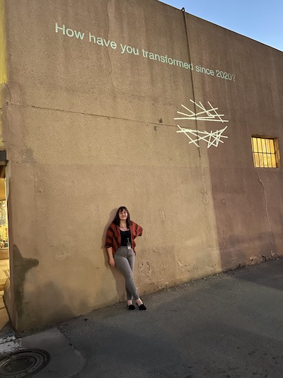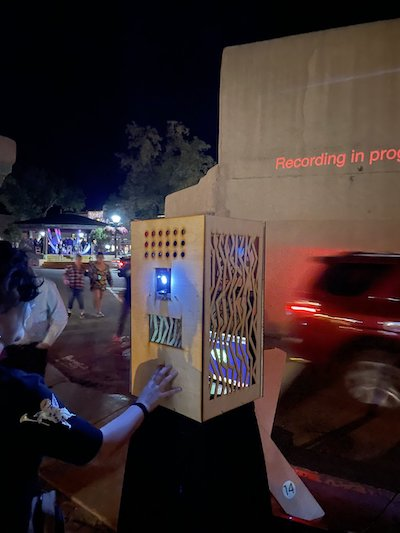 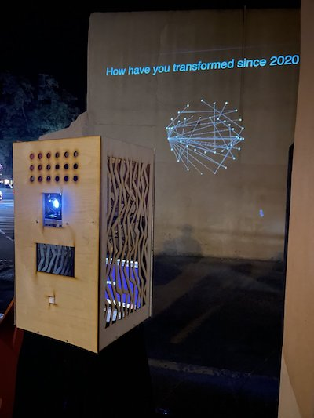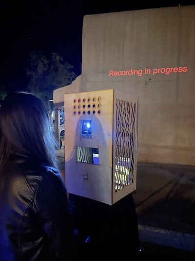8 different filtering affects were designed for this project:
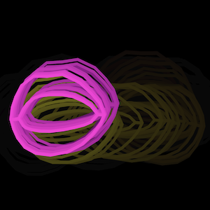 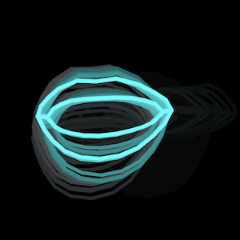 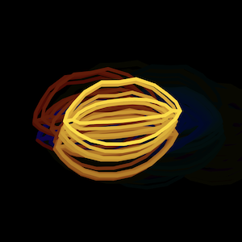 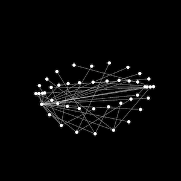 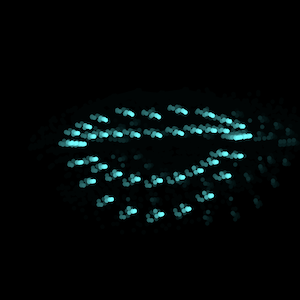 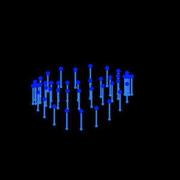
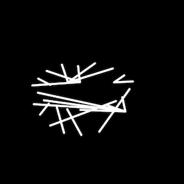
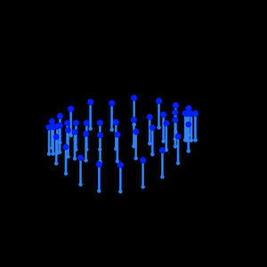
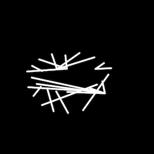
More videos were posted on my art Twitter @ninasketches.
I also taught a workshop to the local middle school about RGB LEDs. They really loved it and it was so lovely to be back in the classroom. Learning materials are here.
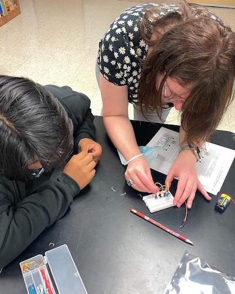 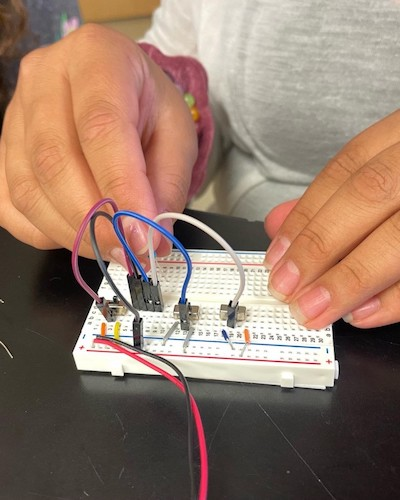 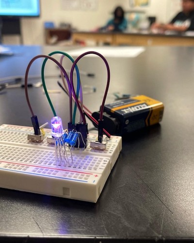My full writeup is here and the Paseo festival's article is here.